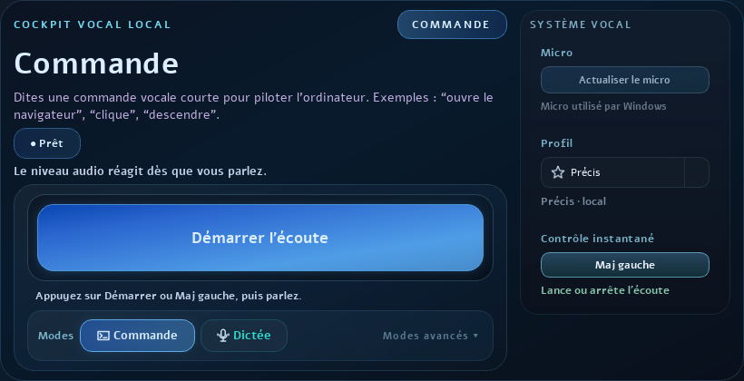

Assistant vocal local et sécurisé pour Windows
Voxirys, assistant vocal local pour Windows.
Dictez du texte, lancez des commandes et contrôlez la souris à la voix. Vos données restent sur votre ordinateur, sans envoi vocal ou texte vers internet.
Version bêta 0.1 — Windows 10/11 — setup Windows recommandé.

Voxirys actif Dictée, commandes et souris à la voix.
Fonctions principales.
Ce que propose Voxirys aujourd'hui, en version bêta.
Dictée
Dicter une phrase et l'insérer dans le travail en cours.
Commandes vocales
Déclencher des actions simples sans quitter le contexte Windows.
Souris à la voix
Déplacer, cliquer et interagir avec l'ordinateur par commandes vocales.
Confidentialité locale
Traiter la voix directement sur l'ordinateur, sans envoyer les données sur internet.
Publics concernés.
Voxirys est pensé pour des usages où la voix peut rendre l'ordinateur plus accessible, plus rapide ou plus confortable.
Personnes handicapées
Réduire la dépendance au clavier et à la souris quand le geste est difficile.
Enseignants
Dicter, piloter certaines actions et gagner du temps pendant la préparation ou le cours.
Médical
Faciliter la saisie et les actions répétitives dans un contexte de travail exigeant.
Autres usages
Tester la commande vocale locale dans des environnements professionnels ou personnels.
Téléchargement officiel
Télécharger la bêta Windows.
Voxirys est actuellement proposé en version bêta 0.1. Le logiciel s'exécute localement sur Windows : vos commandes, votre voix et vos textes dictés restent sur votre machine.
Windows 10/11.
Setup Windows : Voxirys-Setup-0.1-beta-20260606_143947.exe.
Archive portable disponible en option : Voxirys-Portable-0.1.zip.
Installateur Windows disponible dans la release GitHub v0.1-beta.
Aucune donnée vocale ou texte dicté n'est envoyée sur internet.
Logiciel en développement.
Contact.
Installation, retour bêta ou usage professionnel. Indiquez le contexte pour que la réponse soit plus précise.